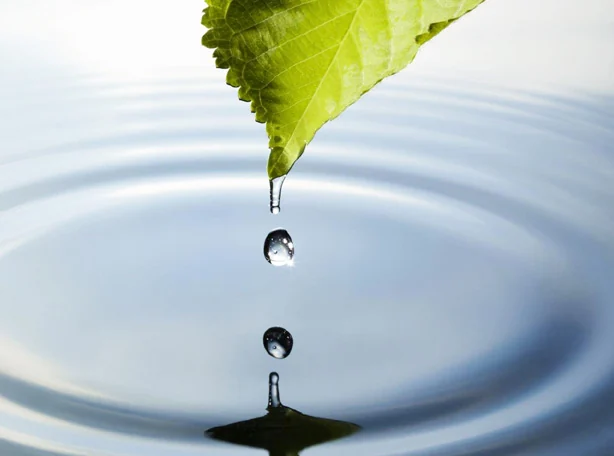

O nás
Voda je naše
společná práce.
Rodinná obchodní, projekční, realizační a servisní firma z Tábora. Řešení pro domácnosti, firmy, obce i průmyslové provozy zajišťujeme vlastními kapacitami nebo s odbornými partnery.
Poznejme váš záměr
Čistá řešeníby White Elephant / Tábor
Od návrhu po provoz
Jedna návaznost.
Od začátku do konce.
Blíž k nám
Co je pro nás
důležité.
Lidé za Čistými řešeními
Jsme menší rodinná obchodní, projekční a realizační firma se sídlem v Táboře. Podnikáme v oblasti životního prostředí s důrazem na vodohospodářské stavby pro hospodaření s vodou v obcích. V našem týmu máme zkušené projektanty, obchodní zástupce, montážní techniky, instalatéry i elektrikáře. Díky tomu dokážeme vodohospodářské stavby realizovat od A do Z.
Smysl naší práce
Naším hlavním posláním je nabízet kvalitní produkty a služby pro zlepšování stavu životního prostředí. Snažíme se klientům navrhovat optimální řešení využití dešťové vody a efektivní likvidaci odpadních vod. Ať už se jedná o projekt rodinného domu, chaty, či chalupy, vždy jsme schopni po úvodní konzultaci navrhnout vhodné personalizované řešení od projektové dokumentace po kompletní realizaci.
Pro koho pracujeme
Našimi klienty jsou developerské společnosti, stavební a montážní firmy, ale i koncoví zákazníci. Zakládáme si na prozákaznickém přístupu a také otevřené a férové komunikaci.
Technologie, kterým se věnujeme
Mimo jiné jsme autorizovaným prodejcem domovních čistíren ENVI-PUR a ASIO , kde kromě prodeje zajišťujeme odbornou montáž, servis a poradenství.
ZKUŠENOST PROJEKTOVÉHO PARTNERA
Spolupráce, která pokračuje i po předání.
Se společností Čistá řešení dlouhodobě spolupracujeme, realizují námi vyprojektované záměry v oblasti vodohospodářských staveb, především s důrazem na čištění odpadních vod. Naši zákazníci si chválí především jejich časovou flexibilitu, seriózní a profesionální přístup a poctivou poprodejní péči – která je dle mého názoru v našem oboru jednou z nejdůležitějších hodnot. Určitě doporučuji všem zájemcům o kvalitní služby.
Technologičtí a obchodní partneři
S kým
spolupracujeme.
Jsme nezávislý dodavatel: technologii vybíráme podle vašich potřeb, ne podle jednoho výrobce.


Začněme vaším záměrem.
Řekněte nám, co potřebuje váš dům, pozemek nebo provoz.